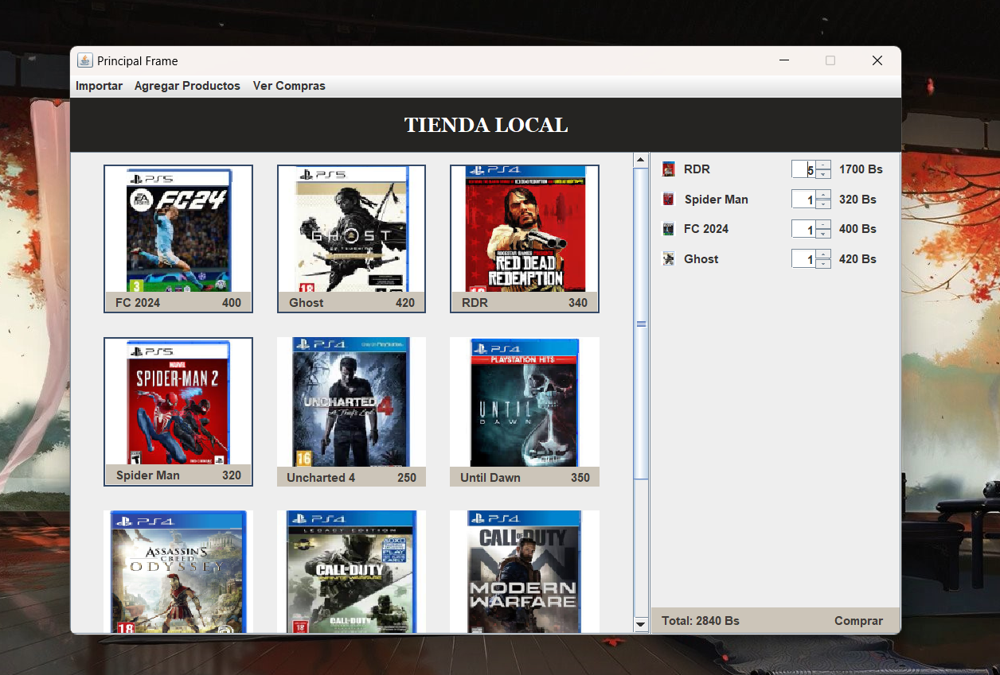
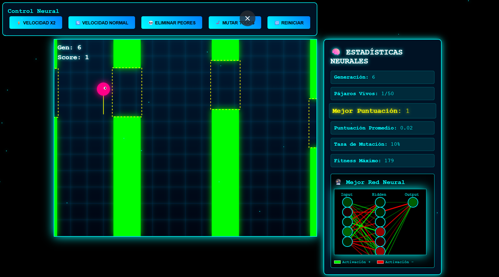
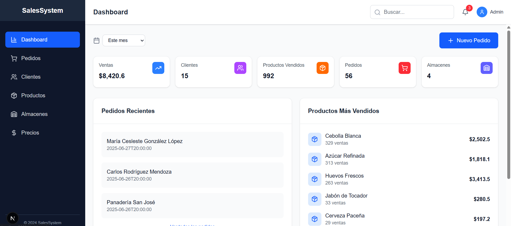

At Nur University I built interesting projects applying what I'd learned through the courses. Here are some projects:
This project, made for the Programming II course, was nice to implement OOP, which was one of the fundamental things we learned. Built with pure Java, this project allows registering product lists— games in this case—and selling them.
In Programming IV we learned about machine learning using Python. For this project, I used that knowledge to build FlappyAI. Inspired by the game Flappy Bird, but here the computer is the one who plays. At first it seems like the computer is terrible at this game, but then with every failure comes progress. As time passes you can see how it makes progress and eventually learns how to play until it never loses.
This was a project for the Databases II course. For this project, I applied knowledge about creating and using triggers, functions, and views for databases. Here I related many tables like users, roles, products, units, invoices, etc. The software allows making sales, managing stock, and viewing stats.
